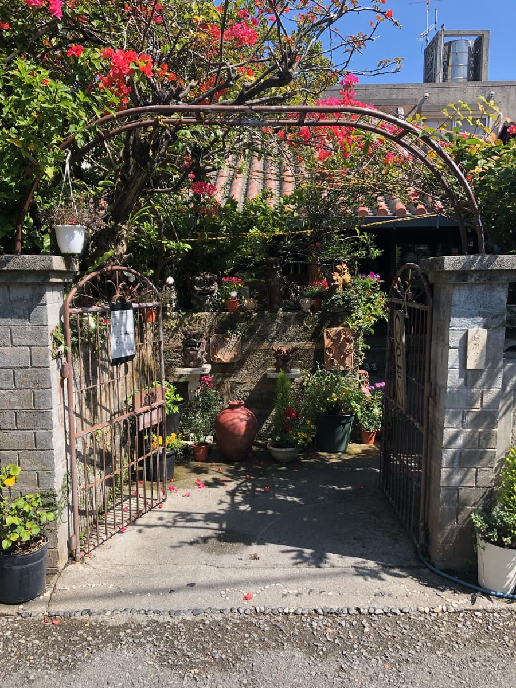
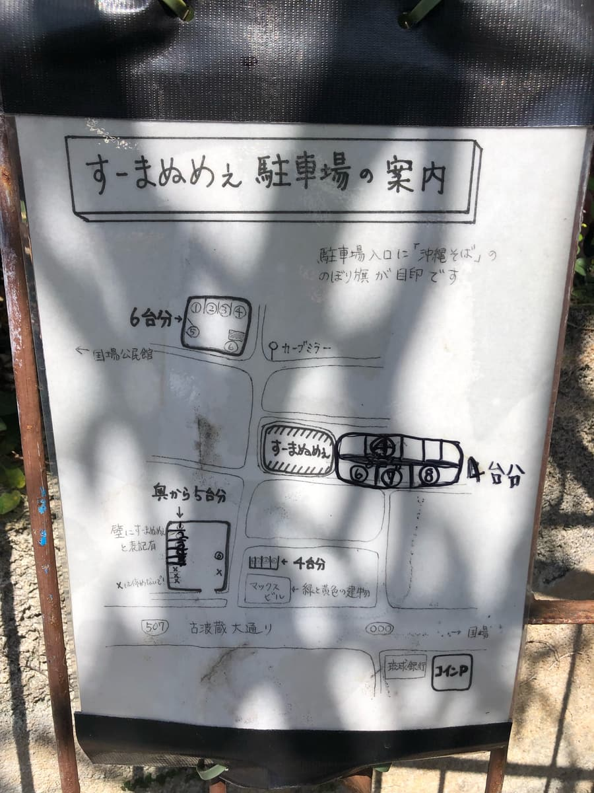
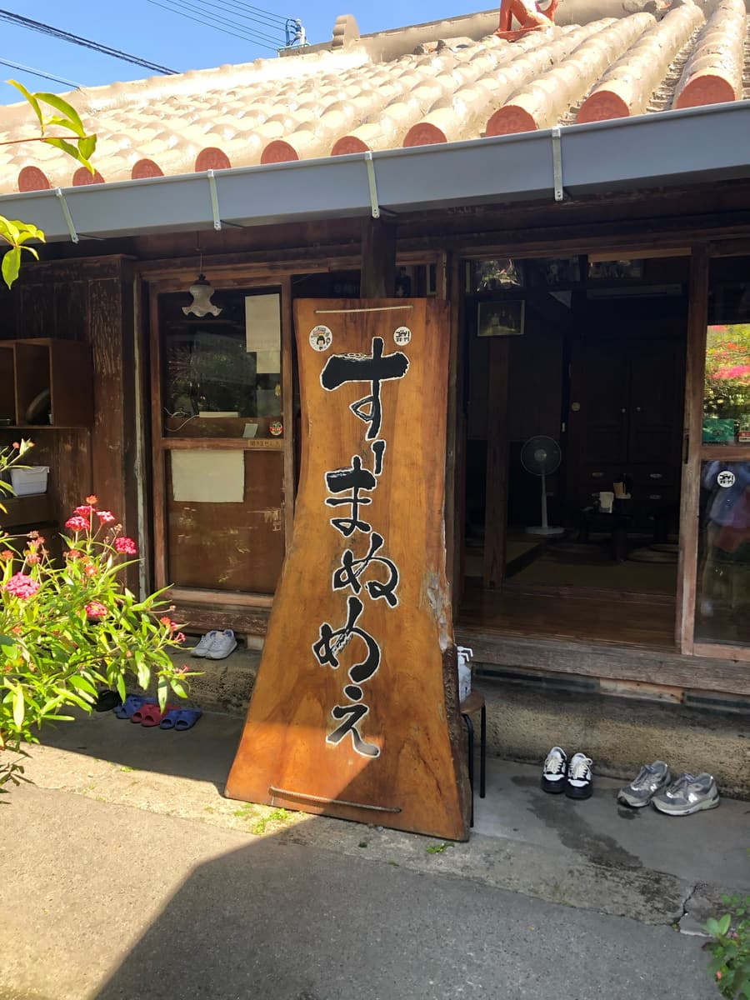
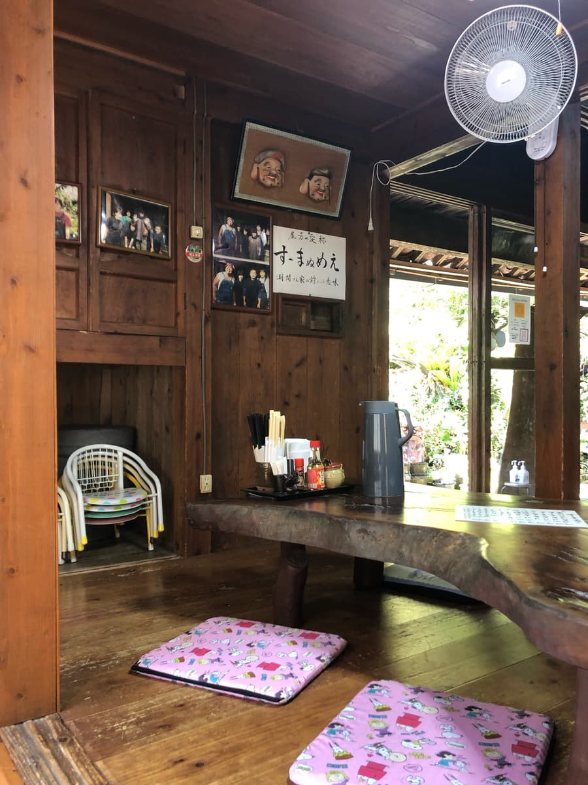
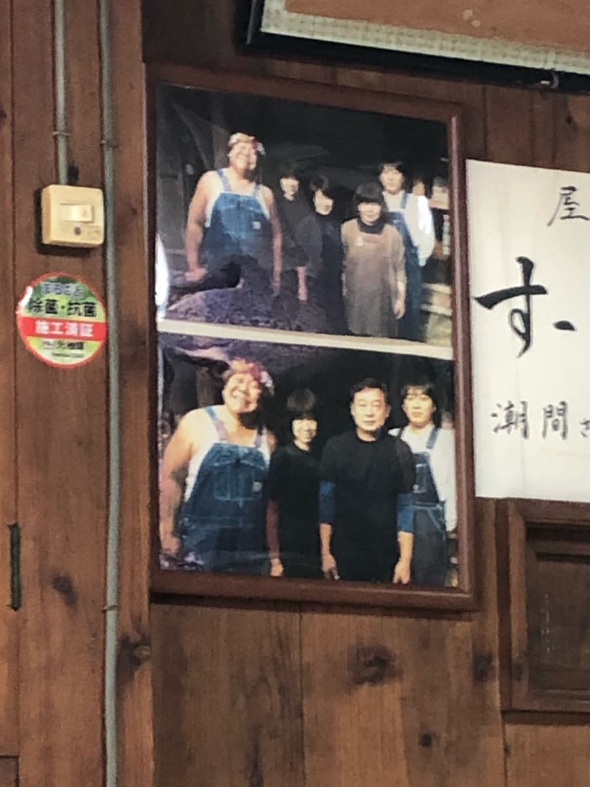
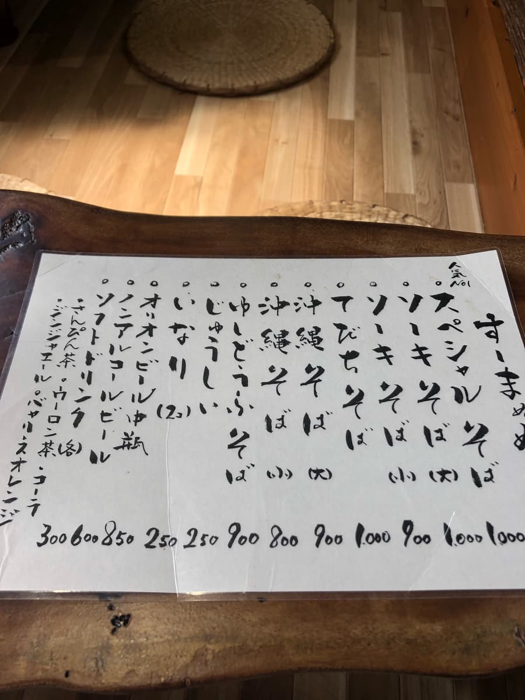
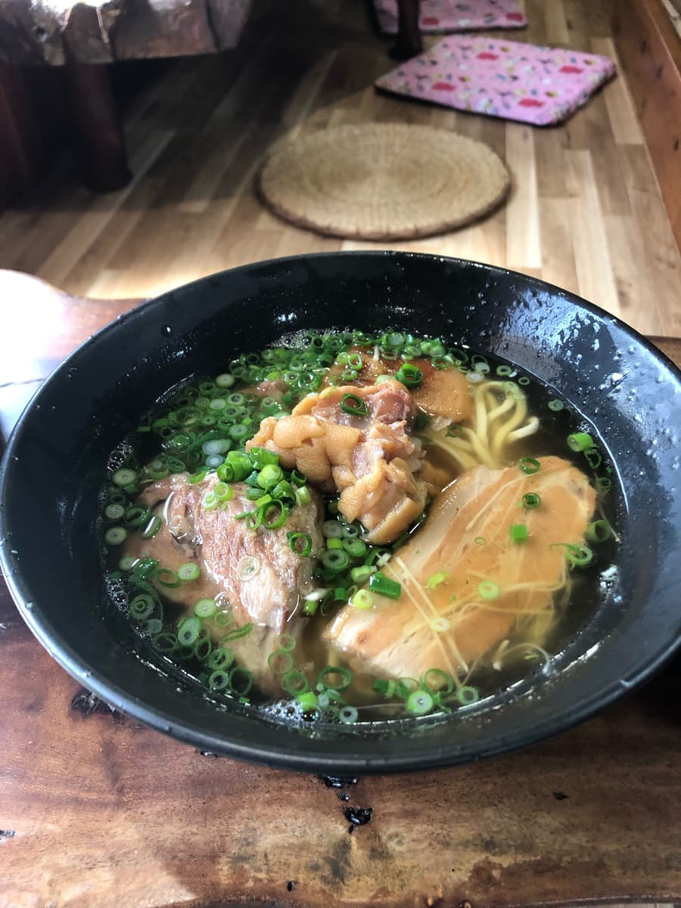
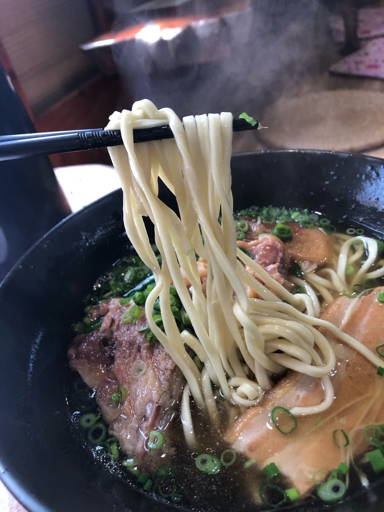

I ate here in March 2024 😄 When I told my friends I'd gotten hooked on touring Okinawa soba and asked them to tell me a delicious Okinawa soba shop, this shop was recommended, and it was a soba shop I'd wanted to try for a long time 😁

This shop is located in from the main street of Auxiliary National Route 507, but the moment I arrived at the shop, it felt like I had suddenly slipped back in time 😆
The moment I saw the exterior of the shop, I remembered the house of my late obā (grandma) in Nago City 😄
My late obā's name was “Kamado,” but this nameplate says “Kame” 😂 A major name that's a classic among Okinawan obās lol
Did they renovate Grandma Kame's house and turn it into an Okinawa soba shop? lol

This shop is along a narrow road set back from the main street of the auxiliary national route, and I struggled to find the parking lot. However, a staff member guided me and I was able to park in the lot next to the shop, and looking at the parking guide at the entrance, it seems they've secured about 19 parking spaces in the surrounding area 😆


This shop also had tables set outside, in what looked like a garden, where you can eat, but I went right at opening time and the inside was empty too, so I decided to eat inside 😄


The “special soba,” which my friend had also recommended, was listed as the No.1 most popular, so I ordered the “special soba.”

The “special soba” I ordered has arrived 😆 It's a clear soup 🤤
The customary sip of the soup. It's a soup with the bonito coming through. It tastes just plain delicious.

Next, I have the noodles. Thin straight noodles, and the texture is on the soft side.
The toppings are pig's feet (tebichi) (pork trotters), braised pork belly (sanmai-niku), and bone-in pork ribs (hon-soki), everything on top, like “Futami Soba” in Nago City 😆
It's fairly, just plain delicious.
Rating (9/15): I think it's just plain delicious. The exterior, an old Okinawan red-tiled-roof building, looks photogenic for tourists, and I think it's popular.
How about trying this shop at least once?
Noodles: ★★★☆☆（3）
Soup: ★★★☆☆（3）
Toppings: ★★★☆☆（3）